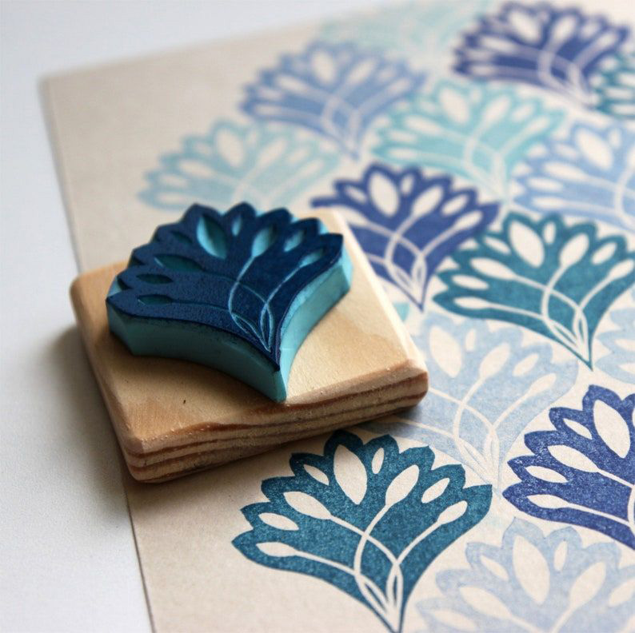

done through any method that can be applicable for you including tracing or copying. In this stage, you should remember that the image on a block will appear backwards when printed.
Create a relief plate: Carefully use cutting tools such as a knife to trace, cut and remove the outline of unwanted parts from the image to reveal the design to be printed. To avoid cutting the wrong parts, you may colour the unwanted parts.
Relief printing: During printing, apply ink to a relief design on a plate by using a brayer or brush and place it upside down onto the paper. Gently roll it on and pull the plate of the paper to reveal the image. Figure 4.3 shows a relief print.
